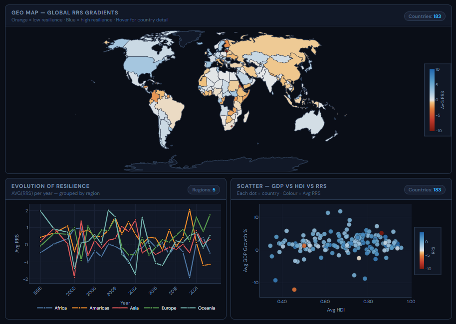

QUANT
QUANTPyTorch / FinBERT / GNN
Fin-Glassbox
A multi-module, explainable financial decision system combining market and news representations, risk modelling and fusion constraints.
PyTorchFinBERTGNNFinancial ML
Machine learning experiments, explainable models, data engineering systems and the occasional deep dive into Linux. Project descriptions are grounded in the repository or recorded work; not every experiment is deployed.
QUANTA multi-module, explainable financial decision system combining market and news representations, risk modelling and fusion constraints.
Multimodal document forgery detection combining JPEG-domain evidence, spatial representations and degradation-aware fusion.
 ML-AI
ML-AIA multi-agent content pipeline with orchestration, structured generation, retries and a Flask/PostgreSQL backend.
A relational data platform developed during my PTCL internship: 4,303 smartphone records across 28 tables from six data sources.
A configurable data collection and prospect-analysis workflow spanning web crawling, structured records and backend automation.
 ANALYTICS
ANALYTICSEconometric exploration and predictive modelling of macroeconomic indicators, including model evaluation and forecast comparison.

ANALYTICSData analysis and interactive reporting for disaster recovery and resilience insights.
Custom Linux desktop configuration, packaging and GNOME dock behaviour across physical machines and virtual environments.
Experimental work in medical-image analysis and AI-assisted healthcare workflows.